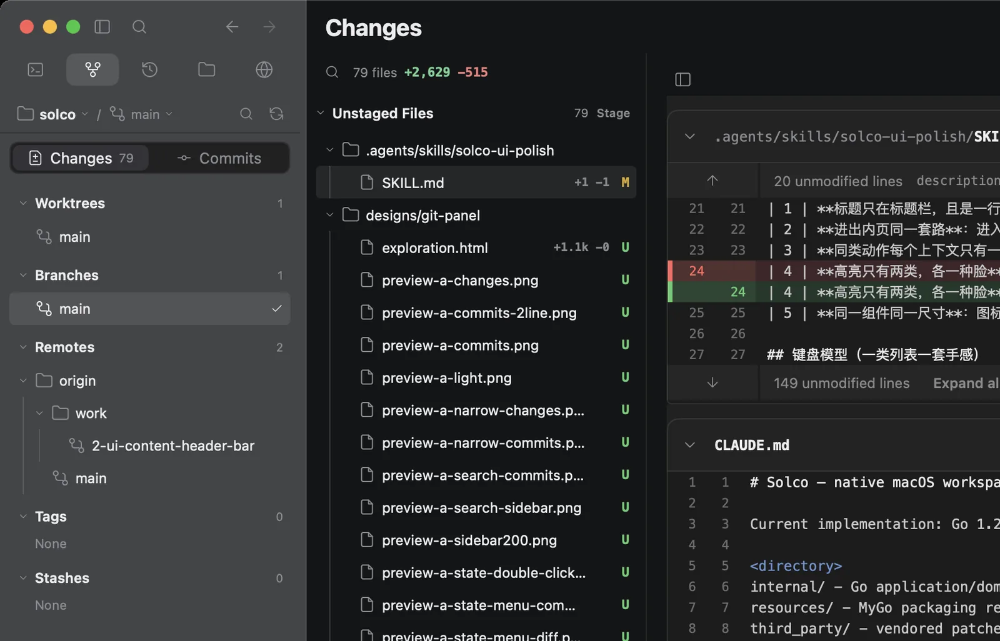

01Sessions and agents
Give each task a stable place. Solco shows live agents and read-only history without turning history into another runtime.

02Native terminal
Work beside real terminal sessions with native selection, scrolling and layout.

03Project files
Open code, Markdown and images next to the work that changed them.

04Git review
Read the diff, inspect history, stage and commit with confidence.

05Remote devices
Add a machine over SSH and bring its sessions into one view.